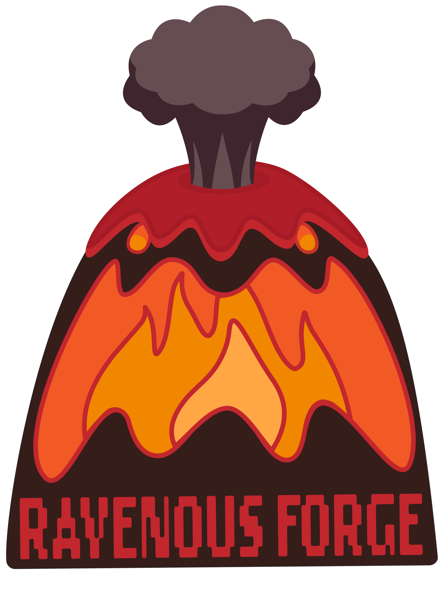
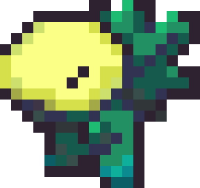

Terra Inferno
Factsheet
Developer: Ravenous ForgeRelease date: June 2024
Platforms: Windows
Mac
Website: https://ravenous-forge.github.io
Regular Price: FREE
Description
Terra Inferno is a Turn-Based Tactics meets Resource Management Game where you defend yourself from human
invasion.
Humans have landed on Terra Inferno, spreading like a virus, bringing pollution and robbing the planet of
its
precious resources. But they have stirred the planet from its slumber and it's retaliating by bringing the
environment to life and causing natural calamities!
As the planet you can spread wildfires across forests to incinerate your foes then conjure storm clouds to
simmer the roaring flames and heal your Florians. Carve canyons through rivers to flood and drown the
humans!
Use the Florians and the planet to your advantage to destroy the Human's Mothership to save Terra Inferno!
History
Features
- Turn Based Tactics
- Resource Management
Videos
Images
Logo & Icon
 About Ravenous Forge
Ravenous Forge is a student-run studio created in 2024 to make our first project, Terra Inferno.